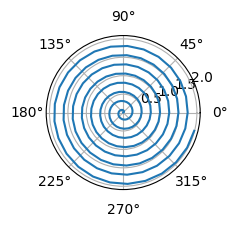

Overview
1 Polar Axis
For a demonstration of a line plot on a polar axis, see Figure 1. Equation 2
Black-Scholes (Equation 1) is a mathematical model that seeks to explain the behavior of financial derivatives, most commonly options:
\frac{\partial \mathrm C}{ \partial \mathrm t } + \frac{1}{2}\sigma^{2} \mathrm S^{2} \frac{\partial^{2} \mathrm C}{\partial \mathrm C^2} + \mathrm r \mathrm S \frac{\partial \mathrm C}{\partial \mathrm S}\ = \mathrm r \mathrm C \tag{1}
\mathcal{M}
\mathcal{L} \tag{2}
(Wikipedia 2022) Equation 2 ?@eq-stddev1
Code

Code
from math import pi
from random import uniform
from ipywidgets import Button
from ipycanvas import Canvas, hold_canvas
canvas = Canvas(width=300, height=300)
def recursive_draw_leaf(canvas, length, r_angle, r_factor, l_angle, l_factor):
canvas.stroke_line(0, 0, 0, -length)
canvas.translate(0, -length)
if length > 5:
canvas.save()
canvas.rotate(r_angle)
recursive_draw_leaf(
canvas, length * r_factor, r_angle, r_factor, l_angle, l_factor
)
canvas.restore()
canvas.save()
canvas.rotate(l_angle)
recursive_draw_leaf(
canvas, length * l_factor, r_angle, r_factor, l_angle, l_factor
)
canvas.restore()
def draw_tree(canvas):
with hold_canvas():
canvas.save()
canvas.clear()
canvas.translate(canvas.width / 2.0, canvas.height)
canvas.stroke_style = "black"
r_factor = uniform(0.6, 0.8)
l_factor = uniform(0.6, 0.8)
r_angle = uniform(pi / 10.0, pi / 5.0)
l_angle = uniform(-pi / 5.0, -pi / 10.0)
recursive_draw_leaf(canvas, 150, r_angle, r_factor, l_angle, l_factor)
canvas.restore()
button = Button(description="Generate tree!")
def click_callback(*args, **kwargs):
global canvas
draw_tree(canvas)
button.on_click(click_callback)
draw_tree(canvas)
display(canvas)
display(button)References
Wikipedia. 2022. “Absorptionskoeffizient — Wikipedia, the Free Encyclopedia.” http://de.wikipedia.org/w/index.php?title=Absorptionskoeffizient&oldid=208046932.